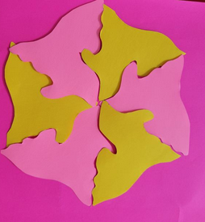
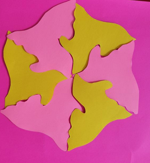

Phase 1: Paper Tesselations Exercise
Suhayla's Desgins


Phase 2: 3D Fastener BrainStorming Designs
Suhayla's Desgins
Suhayla's Desgins

Phase 2: 3D Fastener BrainStorming Designs
Suhayla's Desgins
The first one was made by cutting a slit on the ends of the design so that they can stick together.My second set of fasteners were made using a tab and fold method. In the design, I created a tab and cut a slit on each end of the shape. This way other parts can connect to the other end of the design by folding the tab into the slit of the other shape.
Zhicheng's Desgins
Victoria's Desgins
Andrew's Desgins
Our group decided to divide the parts so that two people were creating fasteners using option A (Zhicheng and I), while the other two were using option B (Victoria and Andrew). We decided to create fasteners that would best suit the materials we were working with. Such as Zhicheng and I were using different types of papers as material to create our fasteners. So we ended up creating designs that had folds and cuts which are easy to create using paper. Zhicheng used an origami approach when assembling his fasteners, while I used a Kirigami method. Victoria and Andrew used different types of foam in their designs, so they ended up creating fasters that relied on static interlocking since the material is more sturdy and firm. I do think that the fasteners created in option B could be more suitable for our future project if we use a more solid material,such as wood or acrylic. The fasteners made in option A would suit a more flexible material. After creating these different fasteners it also leads a person to think about what a fastener could bring to an overall piece? Why would you want a piece to be modular or interlocking?
Phase 3: Goldilocks Laser Tests
Our group members, Victoria went to Friday’s Laser-cut test session that was held on campus. Each of our group members created different fasteners designs to test out. Andrew created notch-based designs, Victoria created flat-based designs, Zhicheng created designs using the example template and I created tab and slot style designs. We decided to create these different fasteners to plan what style our group would use for the final project. Andrew’s slotted design was cut in wood and acrylic and was the sturdiest out of all the connectors. Victoria’s flat designs were also cut in wood and acrylic and interlocked well with the exception of one design. The slot on Zhicheng’s designs was too narrow for the tab to fit in, but they were cut well. My designs were cut in plike and paper which was able to bend and fold together well. However, one of my designs was not able to print out entirely which made it hard for it to connect properly. It was good to do this test run to see what things need to be adjusted and taken into consideration in our designs for the final project.
Andrew's Desgins
Victoria's Desgins
Zhicheng's Desgins
Suhayla's Desgins
Phase 4-5: Rough Draft of Schema & Designs
Phase 6: Final Cuts
Here is a photo of all the pieces in the project laid out.The gray pieces are the robot inspired pieces and the brown ones are the monster inspired pieces.

Individual Group Member Pieces:
All the pieces are color-coded to their respective maker. I created one robot-styled head, one robot-styled connective limb, two robot styled arms, and two antennas. Andrew created one robot-inspired leg, one robot-inspired connective limb, two bodies that act as the base and two small tabs to attach to the bottom of the legs to support the bodies. Victoria made two monster-inspired heads, one monster-inspired leg with a foot, and two monster arms. Finally, Zhicheng made two robot-inspired heads, three diffrent monster-inspired scales and two tails.
Phase 7: In-Class Assembly
Photos of some monsters we made.


Schema
Click here to open the schema.
Final Online Presentation
Here is the link to the final website, that contains the video and more.
For this assignment, I wanted to create something fun and useful that anyone could use. As a group, we started thinking about themes or objects that are connected or contain parts that are interchangeable. The topic of mecha-robots and monsters came up and we thought it was a great idea to create a “super monster” that's infused with robot powers. For my parts I referenced robots I saw in movies such as Doctor Who, Transformers, Terminator, etc… I tried to make them look varied as possible so that a different look could be created with the parts.
There would be a few minor adjustments that I would make to improve the designs of the project is to add more slits to the body so that more limbs and heads could be attached to the base and so that a person could have more freedom in their creation. In addition to that, we could add slits to the headpieces because not all of them had connecting slots to add antennas, scales, or any other limbs. Also to change the shape of the “base” or “body” so it’s not that structured to stand upright and a person could have more freedom in creating how their monster branches out.
For this project, I made a total of six parts, two heads, two antennas, two arms, and one limb. I was assigned to handle the documentation and video for the group, I was unable to attend the meetings on campus on the Fridays that my group members were able to go to. However, I did manage to go to the campus with Andrew to take photos of the pieces. Even so, Andrew had to leave a little early due to class and I had to record videos on my own which was a bit difficult. I originally planned to do a website, but since Victoria wasn’t able to meet up on campus with us she offered to do it. After that, I created two videos for the project presentation. Despite not being able to meet up with everyone in person I think the project turned out great.